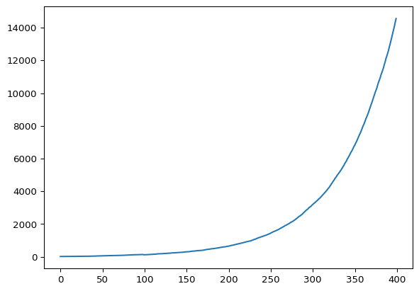
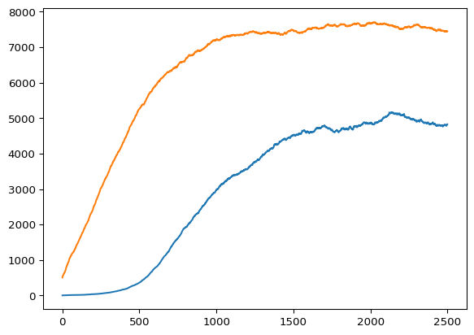

Q = 0.02
LS = 100
P_0 = 20
P = [LS for n in range(P_0)]
PLog = []
T = 400Simulating Population Growth
During the last semester I was intrigued by the mention of differential equations in the vibrations & waves, so I looked into the section about them in stewart’s calculus where I found different models describing population growth such as exponential growth and the logistic model, in this article we should explain and simulate these two models.
Exponential Growth
A simple model would be of a population \(P_0\) where every individual has a probability \(Q \in [0,1]\) to reproduce in every unit time, which means that \(P_0 Q\) new individuals will be produced after one unit time, then \(P_1 = P_0 (1 + Q)\) and a more general formula would be as follows:
\[ P = P_0 (1 + Q)^t \]
Alternatively, we may notice that the rate of growth of the population is proportional to its size, and solve the problem in a different way.
\[ \frac{dP}{dt} \propto P \implies \frac{dP}{dt} = k P \]
From the previous differential equation we can find a function to describe the population, we won’t go through the full solution, since I’m assuming we’re all familiar with the function that equals its own derivative multiplied by a constant which is the exponential function.
\[ P = P_0 e^{kt} \]
Both solutions are of course equal because \(e^k = 1 + Q\), so the constant \(k\) is calculated as \(k = \ln(1+Q)\).
Exponential Growth Sim.
Before making the simulation we must set certain constants and useful variables.
First the previously mentioned reproduction probability Q, LS is the lifespan of individuals, P is a list of all individuals each represented by their time to live, the population size is logged in the list PLog, and T is the number of iterations.
Afterwards, we write the simulation’s loop, inside which there’s a variable NewIndividuals to count the number of individuals “born” in the next iteration, and a list deaths to contain the indices (in P) of the specific individuals that should “die” after this iteration.
for DeltaT in range(T):
NewIndividuals = 0
deaths = []
for n in range(len(P)):
if random.random() < Q:
NewIndividuals += 1
P[n] -= 1
if P[n] <= 0:
deaths.append(n)
for dead in reversed(deaths):
# deaths is reversed to avoid index errors
P.pop(dead)
for birth in range(NewIndividuals):
P.append(LS)
PLog.append(len(P))Then we loop through P and give every individual a probability Q to reproduce, if so, we add 1 to NewIndividuals, every individual’s life decreases and then we check their life has ended to add them to deaths.
After all the iterations we can graph the population using matplotlib.
W, graph = plt.subplots()
graph.plot(range(T), PLog)
plt.show()
Logistic Growth Model
This one models population growth assuming limited resources, so the population is expected to grow exponentially at first then plateau when it’s near the maximum population capacity \(C\) given the resources, the differential equation which can describe this is:
\[ \frac{dP}{dt} = kP \cdot (1 - \frac{P}C) \]
The full solution uses variable separation and partial fractions, if needed it can be found in stewart’s calculus, if the reader wants to attempt to solve it then the next equation is going to be a SPOILER:
\[ P = \frac{C}{1 + Ae^{-kt}} \]
Where \(A = \frac{C - P_0}{P_0}\).
Logistic Growth Model Sim.
The following simulation isn’t very different from the previous one, we’ll only need to introduce the new variable food, and tweak the previously introduced constants to get a nice and possibly realistic graph.
Q = 0.008
LS = 100
P_0 = 5
P = [LS for n in range(P_0)]
food = 500
PLog = []
FoodLog = []
T = 2500Then in the simulation loop we’ll have to replenish the food every iteration, and make the chance of finding food inversely proportional to scarcity, then extend the lifetime of individuals that can find food.
for DeltaT in range(T):
food += random.randint(0, 20)
if len(P) != 0:
EatingProb = 0.07 * food/len(P)
else:
EatingProb = 0
new = 0
deaths = []
for n in range(len(P)):
if random.random() < Q:
new += 1
#individuals eat when hungry and food is available
if (random.random() < EatingProb) & (P[n] <= 2) & (food > 0):
food -= 1
P[n] = LS
P[n] -= 1
if P[n] <= 0:
deaths.append(n)
for dead in reversed(deaths):
P.pop(dead)
for birth in range(new):
P.append(LS)
PLog.append(len(P))
FoodLog.append(food)
W, graph = plt.subplots()
graph.plot(range(T), PLog)
graph.plot(range(T), FoodLog)
plt.show()
Since the simulation includes some random chances, it produces different numbers nearly every time it runs, so the graphs presented are likely different from the ones I’ve seen.